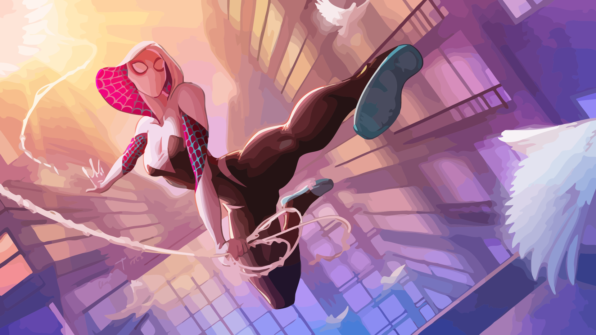

Anterior Próximo

Trata-se de um sentido precognitivo que a possibilita ter um certo nível de consciência do ambiente ao seu redor e a alerta do perigo eminente.
O sentido-aranha, em conjunto com seus reflexos, permitem que Gwen se esquive instintivamente de ataques inimigos, mesmo que estejam fora de seu campo de visão.
Esse é o principal poder que faz referência a uma aranha de verdade, com ele, Gwen possui a habilidade de grudar seu corpo em quase qualquer tipo de superfície, a possibilitando que escale os prédios de Nova York.

O uniforme possui as características "asas de teia" do uniforme original do Homem-Aranha, que possibilitam que Gwen plane por alguns metros, especialmente útil durante quedas. Seus lançadores de teia, todavia, são diferentes daqueles usados pelo Homem-Aranha original. Seus lançadores funcionam absorvendo a umidade do ar para criar seu fluido de teia.